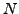
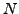

Furthermore, one or more columns with statistical weights may be specified using the keyword col:weights. The keyword accepts two arguments: the first is the column index, the second is a floating-point value, say for the  th weights column. Given  weights columns indexed according to
, the total weight for the
th weights column. Given  weights columns indexed according to
, the total weight for the  th row is evaluated using the weights in the individual columns according to
th row is evaluated using the weights in the individual columns according to
| (4) |
Weights need not be normalised, this is performed by SIGSPEC.
Time, observable, and weights columns have to consist of floating-point numbers only. SIGSPEC checks these columns before starting the computations. If a non-numeric entry is found in one of the special columns, the program terminates with an error message.
Caution: SIGSPEC does not support the exponential annotation (e.g. 4.234E03 or 1.0385e-03)!
Example. The sample project weights contains a dataset with statistical weights in column 3 the squares of which are used by SIGSPEC, as specified by the .ini file entry
col:weights 3 2
The input time series weights.dat represents the sampling of IC4996#89 (V), and the magnitudes were synthesized by
The resulting light curve is displayed in Fig.3. Fig.4 compares the frequency domain output (a closeup for frequencies below 10 cycles per day) with and without employing the weights. Without weights, the peak at 4.7 cycles per day visible, but not the most significant one. Moreover, there is no signal that reaches the sig threshold of 5.
1 freq 5.68136 sig 3.75547 rms 0.088716 csig 3.75547
Column 3 in the time series input file weights.dat contains zeroes for the measurements between HJD2452524 and HJD2452525 and values of 1 for the rest. Consequently, in this example, the exponent 2 assigned to the keyword col:weights in the file weights.ini does not affect the weighting: the result would be the same if, e.g.,
col:weights 3 1
were given instead of
col:weights 3 2
Employing the weights column, SIGSPEC provides the component at 4.7 cycles per day as the only significant signal:
1 freq 4.67968 sig 20.395 rms 0.029129 csig 20.395
2 freq 30.5489 sig 4.47468 rms 0.0252866 csig 4.47468


Next: Time series columns containing
Up: Input
Previous: Time series columns representing
Contents
Piet Reegen
2009-09-23
![\includegraphics[clip,angle=0,width=110mm, clip]{eps/weights.dat.eps}](img53.png)